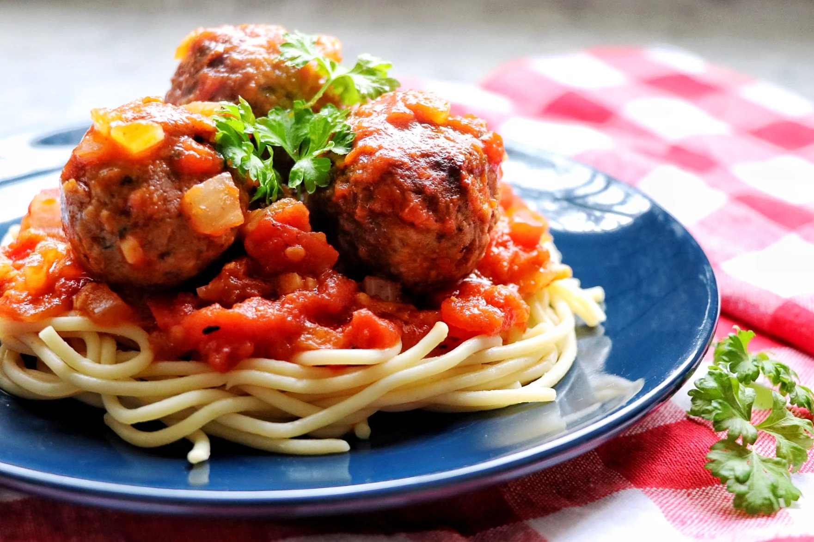

Vegan Spaghetti with (Beyong) Meatballs

Description
Here is the third and the final recipe of this weeks plant-based meals event!
It's Vegan Spaghetti and Meatballs!
Thanks to our plant-based meatball magicians Beyond Meat today we are going to cook Vegan Spaghetti with Beyond Meat's meatballs!'
Ingredients
Please note: This recipe is for 6 servings
- 1 ½ (28 ounce) can whole peeled tomatoes, drained, juice reserved
- ⅓ cup and ½ tablespoon and ½ teaspoon olive oil, divided
- 1 ½ medium onion, finely chopped
- 4 ½ cloves garlic, minced
- 1 ½ (8 ounce) can tomato sauce
- ½ tablespoon dried oregano
- ½ tablespoon and ⅜ teaspoon salt, divided
- ¾ teaspoon freshly ground black pepper, divided
- 1 ½ pound meatless ground beef substitute (such as Beyond Meat® Beyond Beef Plant-Based Ground)
- 1 ½ tablespoons vegan bread crumbs
- 1 ½ tablespoons vegan bread crumbs
- ⅜ teaspoon garlic powder
- ⅜ teaspoon onion powder
- 1 ½ (12 ounce) package spaghetti
Steps
- Dice tomatoes and return them to the can with their juice.
- Heat 2 tablespoons olive oil in a saucepan over medium-high heat. Add onion and garlic to the hot oil and saute, stirring frequently, for 2 minutes. Stir in diced tomatoes and their juice, tomato sauce, oregano, 1/2 teaspoon salt, and 1/4 teaspoon pepper until well blended. Bring sauce to a simmer and reduce heat to low. Let simmer while preparing meatballs.
- Combine beef substitute with bread crumbs, parsley, remaining 3/4 teaspoon salt, remaining 1/4 teaspoon pepper, garlic powder, and onion powder in a bowl; mix until ingredients are well combined. Roll the mixture into twelve 1 1/2-inch balls.
- Bring a large pot of lightly salted water to a boil. Cook spaghetti in the boiling water, stirring occasionally, until tender yet firm to the bite, about 12 minutes.
- Meanwhile, heat remaining 2 tablespoons olive oil in a deep skillet or Dutch oven over medium-high heat. Add meatballs to the pan and saute, turning occasionally, until all sides are browned and a bit crisp, about 10 minutes total. Reduce heat to low.
- Pour simmering tomato sauce over the meatballs and mix. Simmer sauce with meatballs for an additional 10 minutes. Serve meatballs and sauce over spaghetti.
- And voila! Delicious traditional Italian savor is ready to be served with the healthiest way! Enjoy!
Homepage